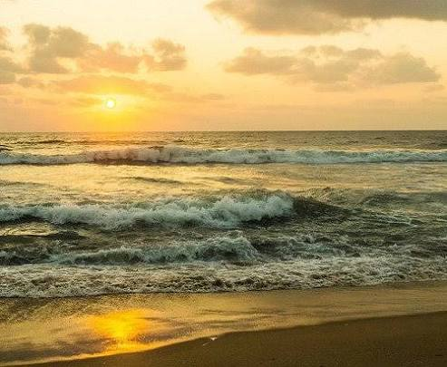
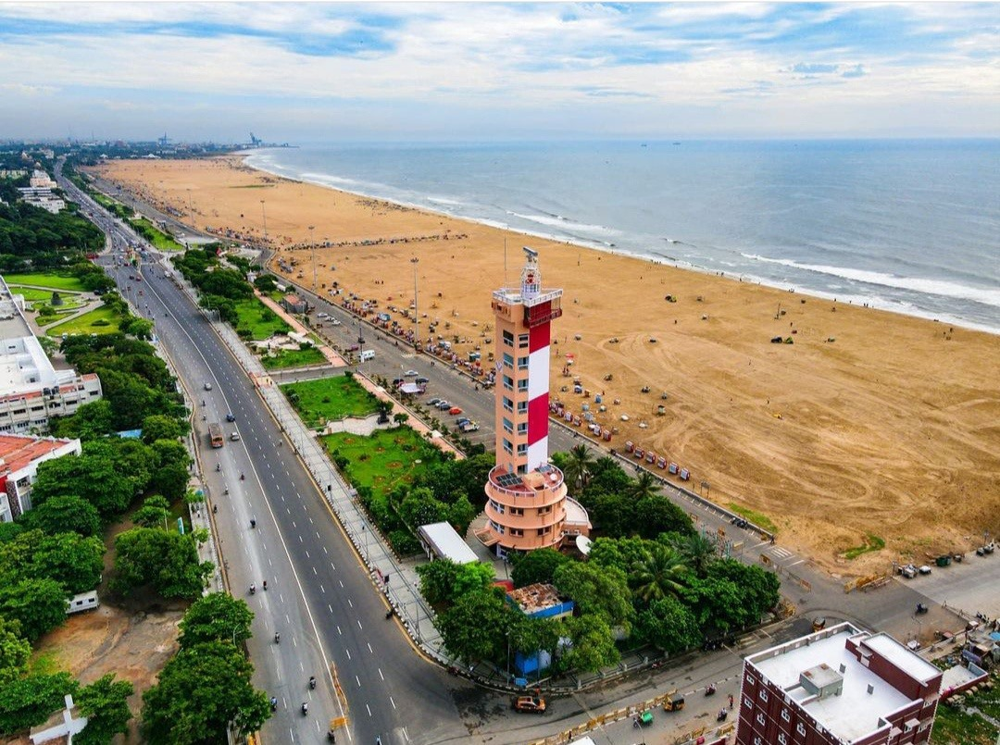
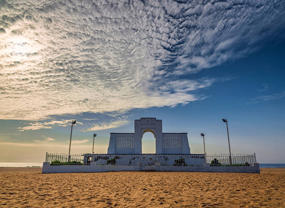
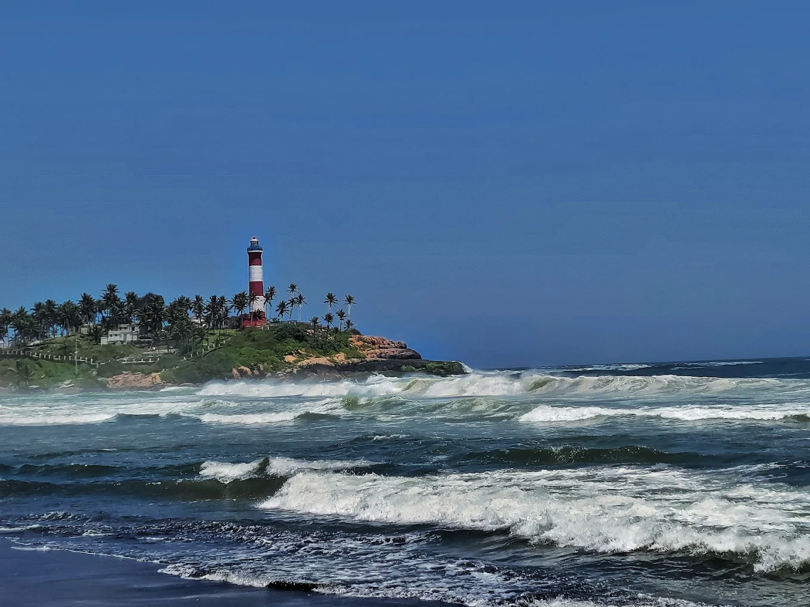
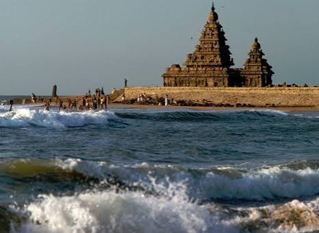
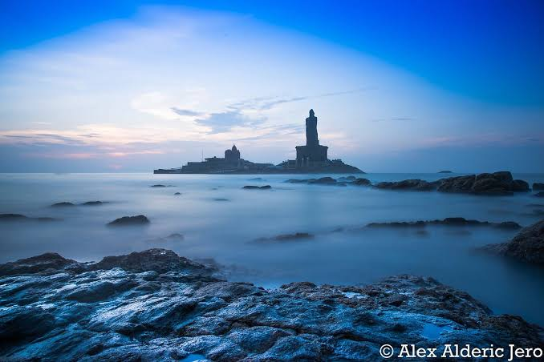
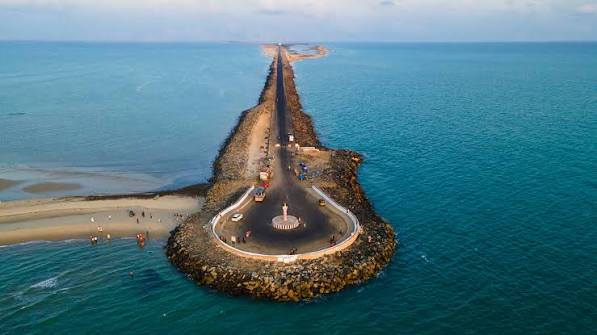

தமிழ்நாட்டின் கடற்கரைகள் இயற்கை அழகுடன், மீன்பிடி, சுற்றுலா, கடல்சார் வாழ்வாதாரம் மற்றும் உயிரியல் வளங்களுடன் நெருங்கிய தொடர்புடையவை. மெரினா முதல் கன்னியாகுமரி வரை, ஒவ்வொரு கடற்கரையும் தனித்துவமான இயற்கை மற்றும் பண்பாட்டு சிறப்பைக் கொண்டுள்ளது.
தமிழ்நாட்டில் 80-க்கும் மேற்பட்ட முக்கியமான / அங்கீகரிக்கப்பட்ட கடற்கரைகள் உள்ளன. 14 கடலோர மாவட்டங்களில் பரவியுள்ள 1,076 கி.மீ. கடற்கரை நீளமும் சுமார் 57% மணற்பரப்பும் தமிழ்நாட்டின் கடல்சார் வளத்திற்கு முக்கிய சான்றுகளாகும்.
“தமிழ்நாட்டின் கடற்கரைகள் — இயற்கையும், வாழ்வாதாரமும், சுற்றுலாவும் சந்திக்கும் இடங்கள்.”
ஆயிரக்கணக்கான மீனவ குடும்பங்களுக்கு நேரடியாகவும் மறைமுகமாகவும் வாழ்வாதாரம் வழங்குகின்றன.
உள்நாட்டு மற்றும் வெளிநாட்டு சுற்றுலாப் பயணிகளை ஈர்த்து மாநிலத்தின் பொருளாதாரத்திற்குப் பங்களிக்கின்றன.
சர்ஃபிங், நீச்சல், படகு சவாரி போன்ற சாகச பொழுதுபோக்கு செயல்களுக்கு சிறந்த வாய்ப்பளிக்கின்றன.
கடல் ஆமைகள், பறவைகள் மற்றும் பல்வேறு கடல்சார் உயிரினங்களின் இயற்கையான வாழிடமாக உள்ளன.
மணற்கரைகள், கடற்கரைத் தாவரங்கள் மற்றும் சதுப்புநிலங்கள் கடற்கரைச் சூழலை புயல் மற்றும் அலை தாக்கம் தடுத்து பாதுகாக்கின்றன.
உணவகங்கள், சிறு வணிகங்கள், மீன்பிடி மற்றும் சுற்றுலா சார்ந்த தொழில்களுக்கு வலுவான ஆதரவளிக்கின்றன.
சென்னை போன்ற நகரங்களுடன் இணைந்துள்ள பரபரப்பான கடற்கரைகள்.
இயற்கை அழகுடன் வரலாற்று நினைவுச்சின்னங்களையும் கொண்ட சிறப்பு இடங்கள்.
சர்ஃபிங் மற்றும் பிற அலைச் சாகச நீர்விளையாட்டுகளுக்கு ஏற்றவை.
குறைந்த கூட்டத்துடன் அமைதியான இயற்கை அழகை அனுபவிக்க ஏற்றவை.

மெரினா கடற்கரை தமிழ்நாட்டின் மிகவும் பிரபலமான மற்றும் நீளமான நகர்ப்புற கடற்கரையாகும். சுமார் 13 கி.மீ. நீளமுடைய இது, சென்னையின் முக்கியமான அடையாளங்களில் ஒன்றாக விளங்குகிறது. கடற்கரையோர உணவகங்கள், நடைபாதைகள், கலங்கரை விளக்கம் மற்றும் பரந்த மணற்பரப்பு ஆகியவை இதன் சிறப்புகளாகும்.

எலியட்ஸ் கடற்கரை, பெசன்ட் நகரில் அமைந்துள்ள அமைதியான மற்றும் பிரபலமான கடற்கரையாகும். மெரினாவுடன் ஒப்பிடும்போது குறைவான கூட்டத்துடன், நடைப்பயிற்சி மற்றும் ஓய்வுக்கு ஏற்ற சூழலை வழங்குகிறது. இங்கு அமைந்துள்ள கார்ல் ஷ்மிட் நினைவகம் முக்கியமான அடையாளமாகும்.

கோவளம் கடற்கரை சென்னையின் புறநகர்ப் பகுதியில் அமைந்துள்ள பிரபலமான கடற்கரையாகும். இது குறிப்பாக சர்ஃபிங் மற்றும் நீர்விளையாட்டுகளுக்காக அறியப்படுகிறது. இளைஞர்கள் மற்றும் சாகசப் பயணிகளை ஈர்க்கும் முக்கிய சுற்றுலாத் தலம்.

மகாபலிபுரம் கடற்கரை இயற்கை அழகையும் பல்லவர் கால வரலாற்றையும் ஒருங்கிணைக்கும் முக்கியமான கடற்கரையாகும். கடற்கரைக்கு அருகில் அமைந்துள்ள கடற்கரை கோயில் (Shore Temple) இதன் மிக முக்கியமான சிறப்பாகும். வரலாற்றுச் சிறப்பும் கடற்கரையின் அழகும் இணைந்து இதை முக்கிய சுற்றுலாத் தலமாக மாற்றுகின்றன.

கன்னியாகுமரி கடற்கரை இந்தியத் துணைக்கண்டத்தின் தென்முனையில் அமைந்துள்ள தனித்துவமான கடற்கரையாகும். இங்கு வங்காள விரிகுடா, அரபிக்கடல் மற்றும் இந்தியப் பெருங்கடல் சந்திக்கும் பகுதி அமைந்துள்ளது. சூரிய உதயம் மற்றும் சூரிய அஸ்தமனத்தை ஒரே இடத்தில் காண முடிவதால் இது மிகவும் பிரபலமான சுற்றுலாத் தலமாகும்.

தனுஷ்கோடி கடற்கரை இராமேஸ்வரத்தின் கிழக்குப் பகுதியில் அமைந்துள்ள தனிமையான மற்றும் இயற்கை அழகு நிறைந்த கடற்கரைப் பகுதியாகும். இப்பகுதி ஒரு குறுகிய நிலப்பரப்பாக நீண்டு காணப்படுவதால், இருபுறமும் கடல் காட்சிகளை காண முடிகிறது. தனிமையான சூழல் மற்றும் வரலாற்றுப் பின்னணி கொண்ட பகுதி.
| கடற்கரை | முக்கிய சிறப்பு | சூழல் |
|---|---|---|
| மெரினா | நீளமான நகர்ப்புற கடற்கரை, உணவு, நகரக் கலாச்சாரம் | பரபரப்பானது |
| எலியட்ஸ் | நடைப்பயிற்சி, ஓய்வு, கஃபேக்கள் | அமைதியானது |
| மகாபலிபுரம் | கடற்கரை கோயில், வரலாறு, சர்ஃபிங் | சுற்றுலா + வரலாறு |
| கன்னியாகுமரி | மூன்று கடல் பகுதிகளின் சந்திப்பு, சூரிய உதயம்/அஸ்தமனம் | ஆன்மிகம் + இயற்கை |
| கோவளம் | சர்ஃபிங், நீர்விளையாட்டுகள் | சாகசம் |
| தனுஷ்கோடி | தனிமையான கடற்கரை, வரலாற்றுச் சிறப்பு | இயற்கை + அமைதி |
| புலிக்காட் | உவர்நீர் ஏரி, பறவைகள் | இயற்கை |
| கலிவேலி | ஈரநிலம், பறவைகள் | சூழலியல் |
| முட்டுக்காடு | படகு சவாரி, நீர்விளையாட்டு | பொழுதுபோக்கு |
“கடற்கரை என்பது வெறும் மணலும் கடலும் அல்ல — அது ஒரு மாநிலத்தின் வாழ்வாதாரமும் இயற்கைச் செல்வமும் ஆகும்.”